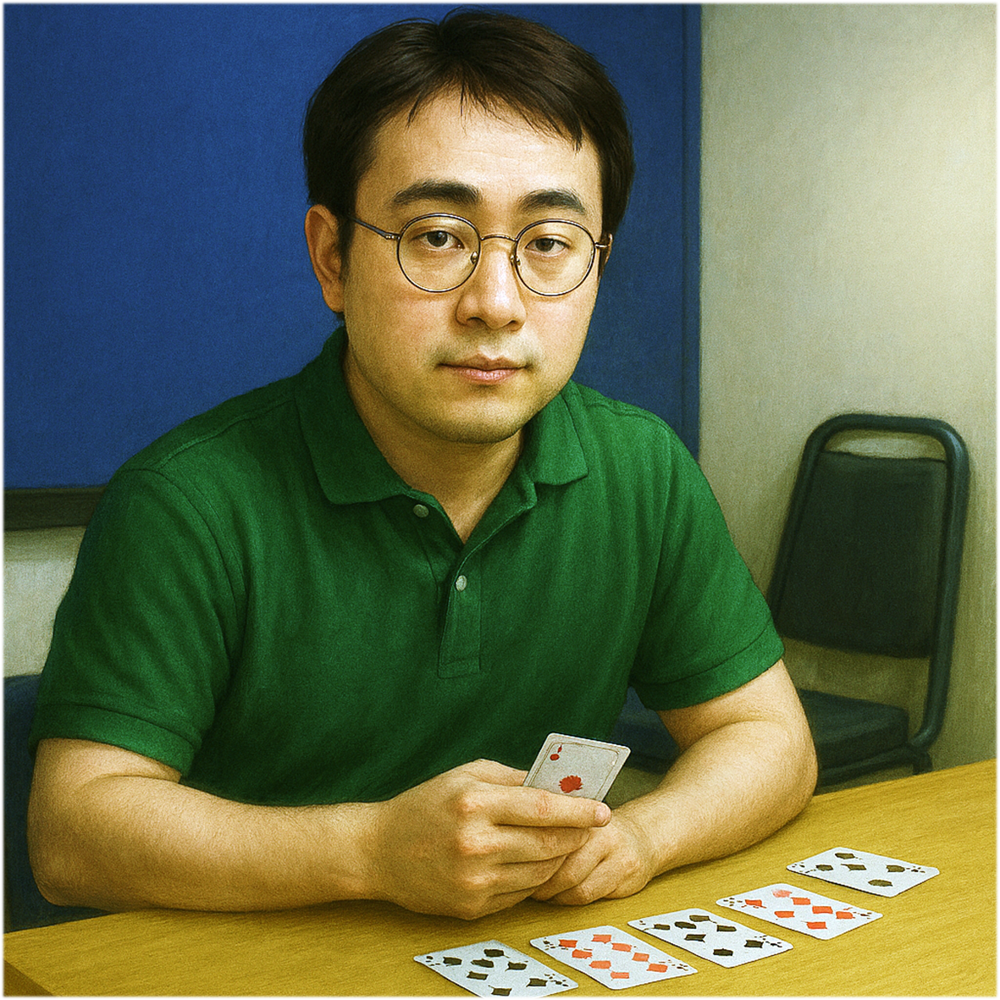

Illustration

Gender
♂️ - 男生
🕵️♂️ - 你不知道我是誰（初始蓋伏）
Goal
成為第二位肄業的研究生
Ability
# 甩鍋 -
即將發表論文時，翻開角色視為發動擺爛，把論文丟給另一位研究生發表。
# 報一波大的 -
你發表垃圾論文或有研究生做研究時，可以蓋伏角色。
## 延畢 -
發表三篇垃圾論文時，你不會立即肄業，直到你發表第四篇垃圾論文才會肄業。
Trivia
「甩鍋」橋牌社長堪稱甩鍋藝術的天才
出手之自然、語氣之理直氣壯，讓人幾乎懷疑「責任」這個詞原本就不屬於他。
最經典的案例之一，就是某門課的期末報告。當報告的程式碼完全無法執行，社長語氣篤定地分析：
「程式碼前半是余十三寫的，後半是色彩學大師寫的，合在一起就不會動了」
聽起來彷彿自己只是個無辜的搬運工，而程式碼報錯的原因，全是余十三與色彩學大師沒把 code 寫好。
還有一次，他在使用 Chat GPT 實作時遇到困難，憤而拍桌怒吼：
「幹你的 Chat GPT 爛死了，我以後不會再用了！」
情緒飽滿、聲量驚人，彷彿是模型本人坐在他對面欠他錢一樣。
這些種種，都充分展現了他在技術不穩、情境混亂時，迅速轉移戰場、甩鍋如風的頂尖身手。
「報一波大的」橋牌社長在 Lab 裡有個傳說：
Meeting 每次都開麥，每次都講超久，從來都聽不出研究進度，總在「醞釀一波大的」
這個醞釀的時間尺度，通常是以「週」為單位，往往一路延到一個月甚至學期末。醞釀得這麼久，聽起來好像真的有什麼驚天動地的成果即將問世。
然後，當時間到了，要嘛再延幾週…
要嘛他真的報了 —
「報告老師，我這個暑假都在裝環境」（註：通常裝環境只需要 1～2 小時）
他的報告總是令人驚奇，因為你永遠猜不到他到底會報什麼，甚至會不會報。也因此，「報一波大的」成了橋牌社長的一種集預告式、自信與拖延於一體的神祕技能。
「延畢」對多數研究生來說，是個嚴肅到不行的詞彙 —
不只代表時間拉長，還得額外掏錢繳學費，壓力與焦慮雙重加成。
但對橋牌社長而言，延畢似乎只是一種生活選項，甚至可以說是他的修煉哲學。
他的指導教授急得跳腳，哪怕他只有一點點東西，也想立刻打包送走，畢竟多留一天就多愁一天。
但是咱們的社長呢？ — 穩如泰山
在學弟眼中，他早該離去；在教授眼中，他還留著幹嘛？但在社長心中，畢業於他輕如鴻毛
無論如何，他仍舊在此 —
而我們，也將持續見證這段活生生的神話：
「延畢不是無奈沒輒，是風格」
#SoC #Master #Year111
Relationship